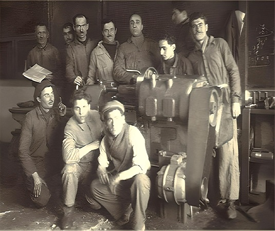

- 2003 - Kalite kontrol birimimiz kurulmuş ve ISO kalite güvence sistemi ile ürün kalitemiz üst seviyeye çıkarılmıştır.
- 2004 - Sıcak hadde tesisimizin ilk ünitesi olan 4 ezme grubu ilave edilmiştir.
- 2005 - Yeni yatırımlar kapsamında , mevcut kapasitenin artırılması amacıyla ikinci ek bina kullanıma açılmıştır. Tam otomatik ve kumlamalı ince kesit kangal çekme makinesi ile ince soğuk çekme ürünlerinin üretimine başlanılmıştır
- 2007 - Yeni mamul çeşitleri (sıcak ve soğuk lama vs.) , hammadde çap yükseltme , doğal gaz ve ocak otomasyon sistemleri,kalite ve kapasite artırımları gerçekleştirilmiştir.
- 2011 - Tam otomatik ve kumlamalı kalın kesit kangal çekme makinesi ile çatlak kontrollü otomat ve diğer ürünlerin üretimine başlanılmıştır.
- 2012 - Sıcak hadde tesisimizin platform kısmı modernize edilmiştir.
- 2013 - Özel kesilmiş , pah kırılmış , doğrultula - parlatma veya altıköşe doğrultmadan geçmiş yuvarlaklar (miller) ve altıköşelerin üretimine başlanılmıştır.
- 2015 - Yeni kontinü grupları ile diğer ilave ve otomasyon sistemleri devreye alındı. Böylece daha kapasiteli , kaliteli , çeşitli , seri ve teknolojik üretime geçilmiş oldu.
GENEL BİLGİ
Bir aile şirketi olan firmamız , 1955 senesinde , Mustafa Saka'nın Karabük'te kurmuş olduğu küçük bir torna atölyesi ile Türkiye sanayisindeki yerini almıştır.
Kısa bir süre sonra , 1956 senesinde , oniki kişinin çalıştığı küçük bir sıcak haddede inşaat demiri üretimine başlanmıştır.
1968 senesinde ki ölümünden sonra Mustafa Saka Varisleri adı altında yönetilmeye başlanan firma , 1989 senesinde Anonim Şirket'e dönüştürülmüş ve
SAKA Demir Çelik Sanayi Ve Ticaret A.Ş. adını almıştır.
- 1977 -Sektördeki ihtiyaçlara göre , devamlı yenilik ve yatırım peşinde olan firmamız daha geniş bir alana taşınmıştır.
- 1987 - Sıcak haddenin yanısıra soğuk çekme ünitesi de faaliyete geçmiştir.
- 1988 - İmalat çeliği ürünlerinin üretimine başlanılmıştır.
- 1989 - Mevcut üretim yöntemi terk edilerek kumlama makineleri kullanılmaya başlanılmıştır.
- 1991 - Kesme ve taşlamaların tüm üniteleri devreye alınmıştır.
- 1995 - Kabuk soyma ve doğrultma - parlatma ünitesi devreye alınmıştır.
- 1999 - Üretim alanını genişletmek için inşa edilen ek bina kullanıma açılmıştır.